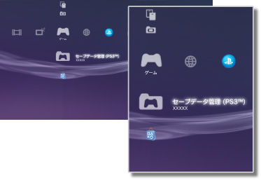
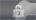

ゲーム > ゲームカテゴリーについて
ゲームカテゴリーについて
 （ゲーム）では、次のようなアイコンが表示されます。操作状況によって、表示されるアイコンは異なります。
（ゲーム）では、次のようなアイコンが表示されます。操作状況によって、表示されるアイコンは異なります。

 |
PlayStation®Store | PlayStation®Storeの情報を表示します。 |
|---|---|---|
 |
ゲームを終了する | PlayStation®3規格ソフトウェアのゲームを終了します。ゲームを起動しているときだけ表示されます。 |
 |
（タイトル名） | PlayStation®3規格ソフトウェアのゲームを遊べます。ゲームのイメージ画像が表示されます。 |
  |
PlayStation®2規格ディスク | PlayStation®2規格ソフトウェアのゲームを遊べます。 |
 |
PlayStation®規格ディスク | PlayStation®規格ソフトウェアのゲームを遊べます。 |
 |
セーブデータ管理（PS3™） | PlayStation®3規格ソフトウェアのセーブデータをコピー／削除したり、情報を見たりできます。 |
 |
セーブデータ管理（PSP™ Remaster / PSP™） | PSP™ RemasterとPSP™Gameのセーブデータをコピー／削除したり、情報を見たりできます。 |
 |
メモリーカード管理 | PlayStation®2 / PlayStation®規格ソフトウェアをセーブするために仮想メモリーカードを作成したり、差込口を割り当てたりできます。また、セーブデータをコピー／削除したり、情報を見たりできます。 |
 |
PS Vitaアプリケーション管理 | PS Vita でプレイしたゲームのセーブデータや、アプリケーションデータ（ゲームのデータ）を、PS Vita からPS3™にバックアップすると、ここに保存されます。 |
|
ゲームデータ管理 | ゲームによっては、追加データなどが保存されます。データを削除したり、情報を見たりできます。 |
 |
（本体ストレージにインストールしたゲーム） | 本体ストレージにインストールしたゲームです。ゲームのイメージ画像が表示されます。ゲームの種類よってアイコンが異なります。 |
 |
（本体ストレージにダウンロードしたデータ） | 本体ストレージにダウンロードしたゲームやゲームの追加データです。起動するとデータがインストールされます。データによってアイコンが異なります。 |
ヒント
- 視聴年齢制限が設定されたコンテンツは、
 や
や
で表示されます。4桁の暗証番号を入力すると再生できるようになります。暗証番号は、 （設定）＞
（設定）＞ （セキュリティー設定）で設定できます。
（セキュリティー設定）で設定できます。 - HDCP（High-bandwidth Digital Content Protection）規格に対応していない機器をHDMIケーブルで接続すると、PS3™からの映像および音声を出力できません。
- 著作権保護されたBlu-ray Discの映像を1080pの解像度で出力するには、HDCP規格に対応した機器にHDMIケーブルで接続する必要があります。
- ディスクや記録メディアなどの種類によっては、PS3™で正しく認識されない場合があります。
重要
- PS3™では、一部のPlayStation®2およびPlayStation®規格ソフトウェアが、従来のPlayStation®2およびPlayStation®と異なる動作をする場合や、適切に動作しない場合があります。
- また、一部のPS3™では、PlayStation®2規格ディスクの再生に対応していません。詳しくは［再生できるディスクの種類について］、各地域のWebサイト、または製品同梱の取扱説明書をご覧ください。